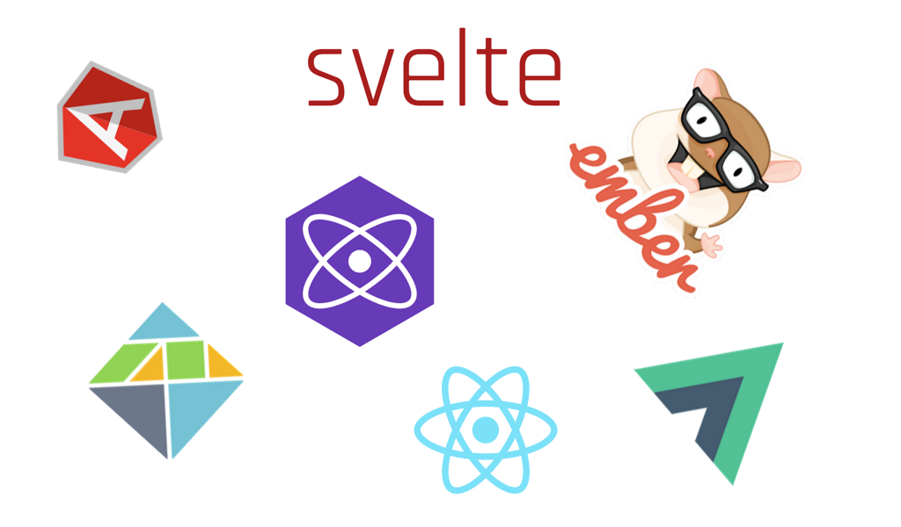
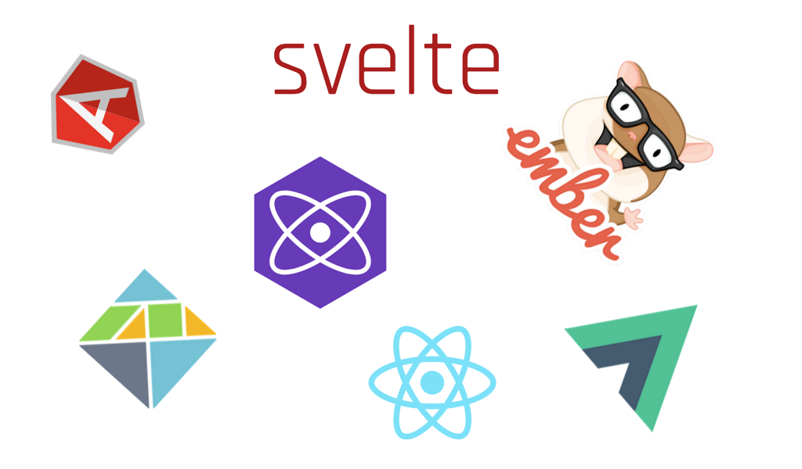

python, javascript, php, java, ruby, y diferentes tipos de frameworks como Django, lavarel, React, React native y Spring.
Los 2 mejores frameworks para desarrollo web en 2022
El uso de frameworks es una de las técnicas más usadas por los programadores para el desarrollo web.
1) Angular: Este framework está basado en el lenguaje JavaScript y desarrollado en TypeScript por los programadores de Google.
2) Django Para un desarrollo profesional, ágil y seguro está Django. Cuenta con un gran acervo de documentación para dominarlo al ciento por ciento, además de tener una comunidad activa y cooperativa.
 

Enlace:
Aprender HTML Y CSSotro Enlace:
Abrir google